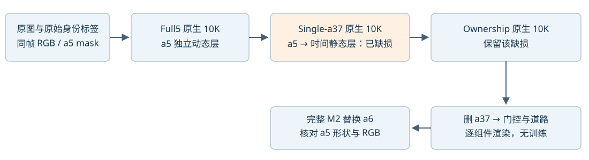
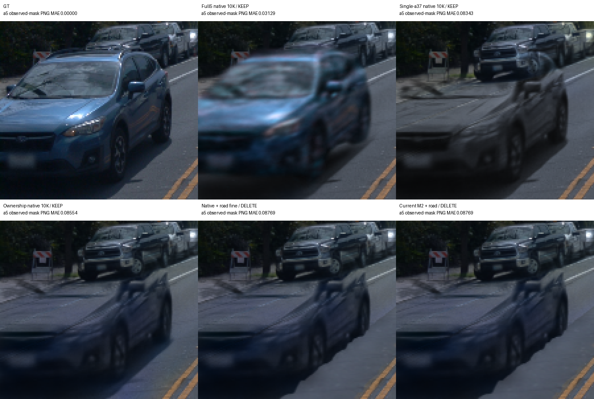
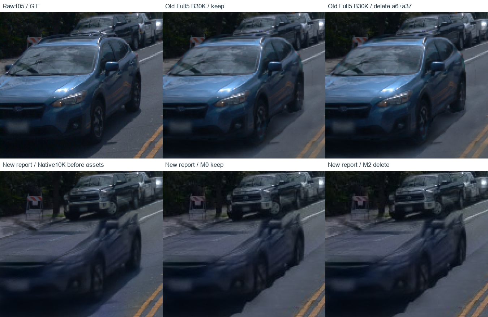
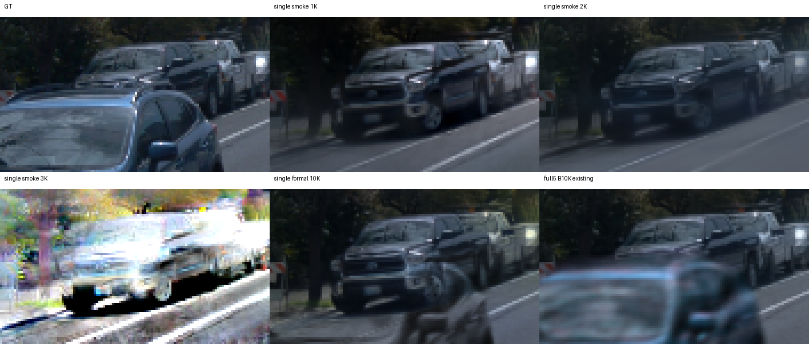

已把最早可见回退定位在 Full5 原生 10K → Single-a37 原生 10K。a5 是真实蓝车；当前尚未做修复，也没有把异常蓝斑的处理套到它身上。该诊断新增训练更新为 0。
下面全部是 raw105、同一相机与时刻。Full5 的车身仍模糊，但车顶和挡风玻璃较完整；Single-a37 的原生 keep 图已明显缺损。随后 ownership、道路和 M2 延续了这一问题。


旧五身份方案在只删 a6＋a37 时，a5 的蓝色车顶和挡风玻璃仍完整。新“完整 a6 的材质、采样与实测校正”报告里，M0、M2、keep、delete 的 a5 均已缺损；更早的 Native10K 控制列也已经缺损。

上排：原图、旧 Full5 保留、旧 Full5 只删 a6＋a37。下排：新报告 Native10K（资产之前）、M0 keep、M2 delete。均为 raw105 的同坐标裁切；旧30K和新10K的预算、原图编码格式不同，本图用于定位完整性问题出现的阶段，不作为单变量训练优劣比较。
| 项目 | 旧选择性删除 | 新完整 a6 报告 |
|---|---|---|
| 原生父模型 | Full5 V41 B30K | ownership/run_r3/formal 10K |
| 动态表示 | a5、a26、a18、a6、a37 | 仅 a6、a37；a5 留在时间静态层 |
| “指定身份”的操作 | 保留五身份模型，临时 raster mask 仅关 owner3/4（a6/a37） | 原生重训输入／表示已缩为 a6+a37，再做资产替换 |
| a5 可见结构 | raw105 车顶／挡风完整 | Native10K 就已缺损；M0/M2 都延续缺损 |
新报告 Native10K 的 keep/delete 图块与本次已有原生输出逐像素 uint8 差均为 0；底层父模型身份由原报告 runtime 元数据确认，图像相同只作交叉印证。该报告的 M2 采样、材质与实测校正步骤不是这项既存缺损的起点。
身份选择与训练输入需要区分：旧方案是“保留五身份，再只删目标”，a5 仍有动态高斯；single-a37／ownership 配方是改变原生动态输入，a5 不再保留独立动态表示。已经核实旧 a37＋a6 选择性删除；本地尚未找到现成 only-a37 图，不把记忆当作已重现证据。
3fefd98ecf5dfd5a73898bf46717cc8afe4ca147（11月3日）首次将 single-a37 配方及完成结果归档：只取 actor4=a37，a5 等保留在时间静态层，fresh 重训。它是配方首次入库证据，并非已证明的运行时 HEAD 或唯一 bug 提交。
当前保存的7个核心文件与10月19日源包逐字节一致，其中5个也与同日明文提交一致。未找到核心实现回退证据；旧检查点只保存 config SHA，没有运行时源码 SHA，因此不能排除未记录的临时改动。初始化、表示、RGB分项和运动正则仍未做单变量隔离。
报告证据：旧报告与选择性删除合同 · 新报告原生父模型／列定义核验 · 图像原路径、裁切与 SHA256。没有修改两份原报告，没有新增 GPU 渲染或训练。
本次重新加载旧 single 和当前 ownership 模型，使用原生 CUDA 渲染器逐组件渲染，保持 checkpoint 与模型参数不变。旧 single 的 raw105 重放与原先发布 PNG 的最大 8-bit 差为 0。
这些零差结论仅针对 raw105。raw89 的当前 a37 层在 a5 原始标签域有明显贡献，删除后也有明显变化，不能外推为所有帧都不受删车影响。
Full5 将 a5 作为独立动态对象；Single-a37 则只保留 a37 动态身份，把 a5 留在时间静态层。Single 是从零重训，并非 Full5 权重续训。a5 独立动态输入有 21,358 个独立源点；Single 的静态初始化仅命中 1,442 个独立位置（1,496 行，包含 54 个重复）。这些精确匹配点均未被 a37 的 0.1m 排除规则剔除，也没有被后来的 a6 转移拿走。
a5 仍受整图 global RGB 和 static RGB 监督，不能归因为“没有 RGB 监督”。但它的分支 RGB 名义系数从 dynamic 5 变为 static 1，并进入 static 专有的 duration/velocity 幅值正则，分别偏向长持续时间和小运动。分项归一化和 SSIM 的存在，使这个系数变化不能简单当成每像素精确 5 倍的梯度比例；时间静态层也仍有速度参数，并非位置被硬冻结。
尚未隔离：稀疏初始化、表示能力、RGB 权重和静态正则各自贡献多少；也未定位某一次 SGD 或增密事件。下一项有意义的验证应针对 a5 的静态表示/初始化做单变量对照，并保留现有 a37 + a6 编辑链。
同输入、seed0、损失、学习率、初始化和增密配置的 smoke，在保存的 1K 图中尚未重建 a5 上部。这说明不必等到 10K 才能观察问题，但低步数欠拟合不能被称作“完整车体在 1K 被破坏”。额外评价节点未见显式 RNG 保护，未实测其 RNG 消耗，因此不主张后续 smoke 与 formal 的中间轨迹逐位一致；也没有 Full5 B 的同 1K 配对图来单独比较。

下表统一由 PNG 计算 a5 原始 10,773 像素上的 RGB MAE，含量化误差；它是观测域颜色误差，不能单独衡量车体完整性。上面的同坐标图是形状判断依据。
| 阶段 | raw105 a5 PNG MAE |
|---|---|
| GT | 0.00000 |
| Full5 native 10K / KEEP | 0.03129 |
| Single-a37 native 10K / KEEP | 0.08343 |
| Ownership native 10K / KEEP | 0.08554 |
| Native + road fine / DELETE | 0.08769 |
| Current M2 + road / DELETE | 0.08769 |
a5（track 3S_GJHyCGGK4ypFPVKOOqA）在 raw89–112 有原始标签，raw113–137 已无此车标签。后段左侧其他车不视作同一 a5。GT 标签不能直接等同每个高斯的永久物体归属。
| raw | stage | RGB MAE | 相邻阶段 RGB 变化 MAE |
|---|---|---|---|
| 89 | native_keep | 0.097294 | 0.000000 |
| 89 | native_delete | 0.037537 | 0.064060 |
| 89 | gate_only_delete | 0.037537 | 0.000005 |
| 89 | road_coarse_delete | 0.037537 | 0.000000 |
| 89 | road_fine_delete | 0.037537 | 0.000000 |
| 89 | M2_delete | 0.037537 | 0.000000 |
| 89 | M2_keep | 0.097294 | 0.064060 |
| 97 | native_keep | 0.060009 | 0.000000 |
| 97 | native_delete | 0.058541 | 0.001996 |
| 97 | gate_only_delete | 0.058544 | 0.000071 |
| 97 | road_coarse_delete | 0.058693 | 0.000165 |
| 97 | road_fine_delete | 0.058701 | 0.000010 |
| 97 | M2_delete | 0.058701 | 0.000000 |
| 97 | M2_keep | 0.060171 | 0.001997 |
| 105 | native_keep | 0.085375 | 0.000000 |
| 105 | native_delete | 0.085375 | 0.000000 |
| 105 | gate_only_delete | 0.085415 | 0.000259 |
| 105 | road_coarse_delete | 0.087413 | 0.002075 |
| 105 | road_fine_delete | 0.087528 | 0.000116 |
| 105 | M2_delete | 0.087528 | 0.000000 |
| 105 | M2_keep | 0.087528 | 0.000000 |
| 109 | native_keep | 0.030718 | 0.000000 |
| 109 | native_delete | 0.030718 | 0.000000 |
| 109 | gate_only_delete | 0.030758 | 0.000195 |
| 109 | road_coarse_delete | 0.032968 | 0.002259 |
| 109 | road_fine_delete | 0.033081 | 0.000120 |
| 109 | M2_delete | 0.033081 | 0.000000 |
| 109 | M2_keep | 0.033081 | 0.000000 |
证据：诊断摘要 · 当前模型消融回执 · 旧 single 回执 · 49 帧身份核验 · 初始点口径核验 · 监督与正则核验 · 源码入口与行号 · 实际渲染脚本。
用户已采用 RCR-1 DELETE，作为异常蓝 RGB 的成功修复结果。a5 真蓝车的既存缺损作为独立问题继续待查。
a5 status：independent earlier-version/commit investigation pending。两份实际报告已复核，并找到 single-a37 配方首次入库的 3fefd98。当前排查点是资产步骤之前的原生身份表示切换；尚未确定唯一致因 commit 或单一机制。
本页既有诊断摘要与 Git 回执保留为历史记录，现行 RCR-1 采用状态以本节为准。本次新增已有报告与 Git 的只读核验，未修改模型、未新增 GPU 渲染或训练。